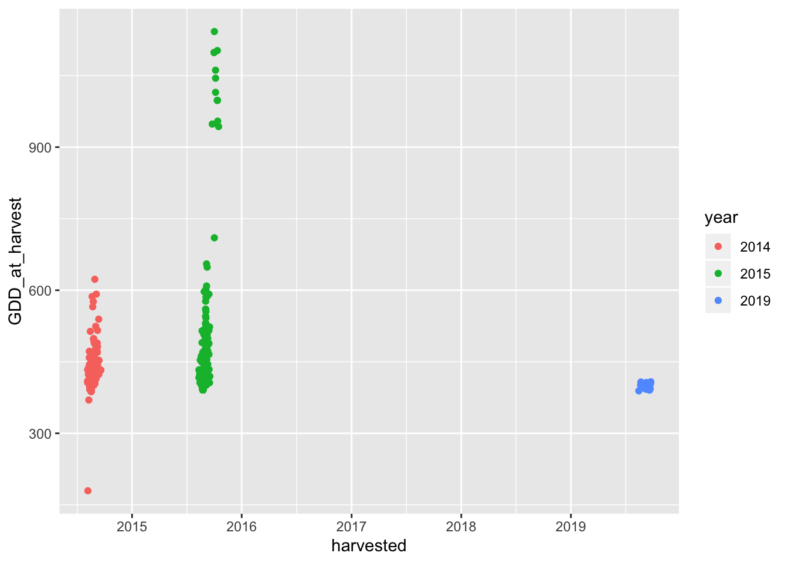
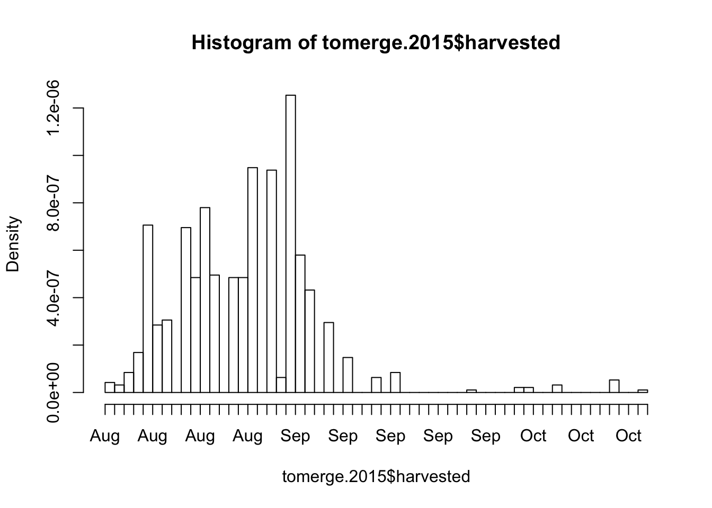
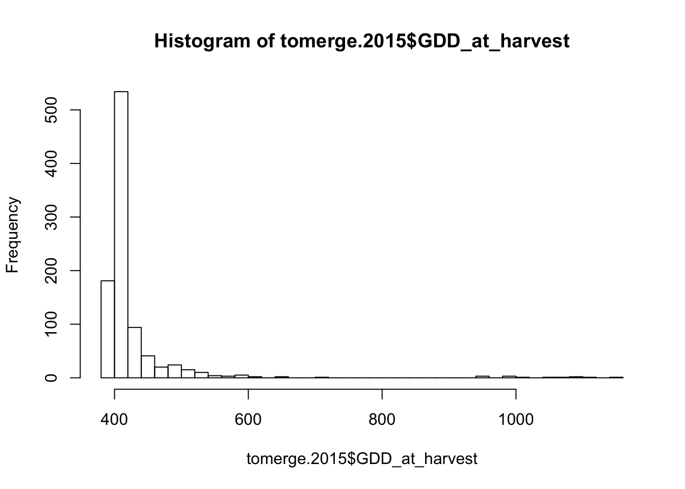
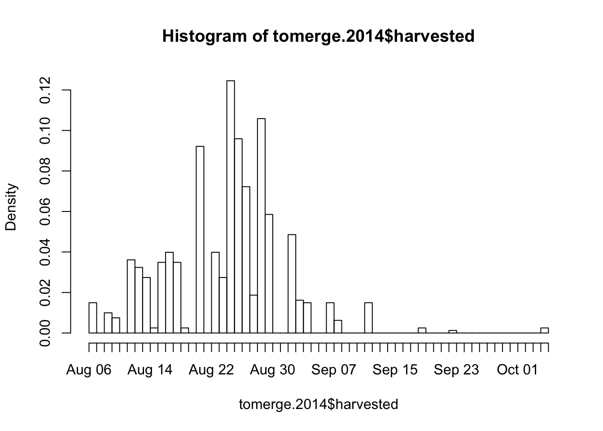
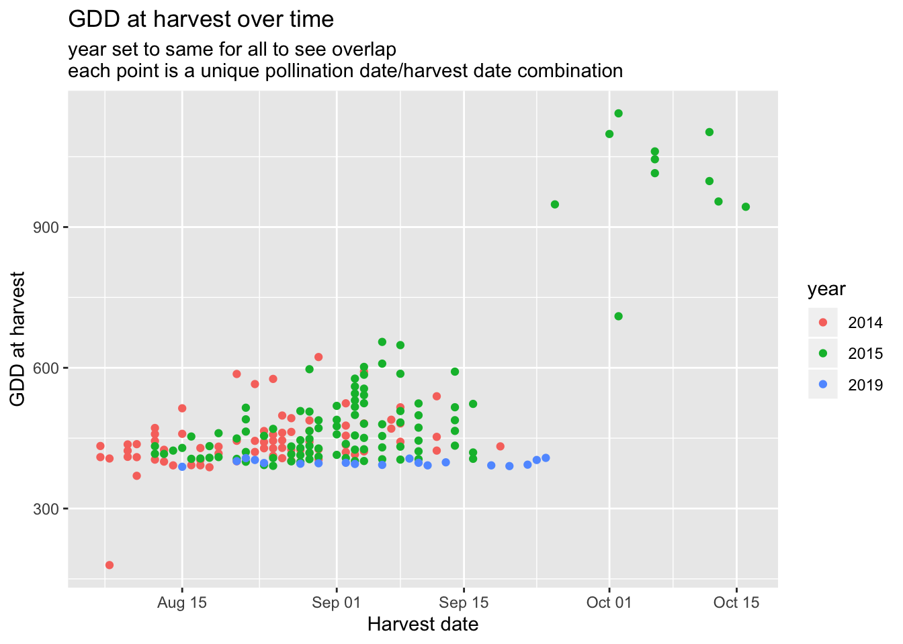
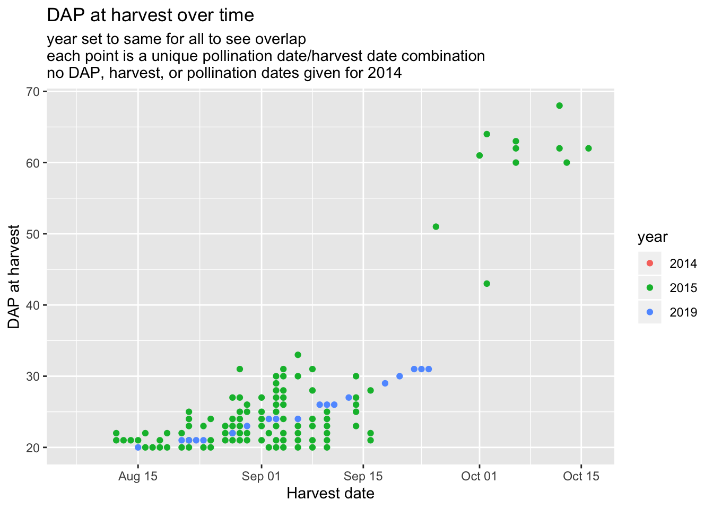

Last updated: 2020-02-04
Checks: 6 1
Knit directory: SweetCornRNA/
This reproducible R Markdown analysis was created with workflowr (version 1.6.0). The Checks tab describes the reproducibility checks that were applied when the results were created. The Past versions tab lists the development history.
The R Markdown is untracked by Git. To know which version of the R Markdown file created these results, you’ll want to first commit it to the Git repo. If you’re still working on the analysis, you can ignore this warning. When you’re finished, you can run wflow_publish to commit the R Markdown file and build the HTML.
Great job! The global environment was empty. Objects defined in the global environment can affect the analysis in your R Markdown file in unknown ways. For reproduciblity it’s best to always run the code in an empty environment.
The command set.seed(20200204) was run prior to running the code in the R Markdown file. Setting a seed ensures that any results that rely on randomness, e.g. subsampling or permutations, are reproducible.
Great job! Recording the operating system, R version, and package versions is critical for reproducibility.
Nice! There were no cached chunks for this analysis, so you can be confident that you successfully produced the results during this run.
Great job! Using relative paths to the files within your workflowr project makes it easier to run your code on other machines.
Great! You are using Git for version control. Tracking code development and connecting the code version to the results is critical for reproducibility. The version displayed above was the version of the Git repository at the time these results were generated.
Note that you need to be careful to ensure that all relevant files for the analysis have been committed to Git prior to generating the results (you can use wflow_publish or wflow_git_commit). workflowr only checks the R Markdown file, but you know if there are other scripts or data files that it depends on. Below is the status of the Git repository when the results were generated:
Ignored files:
Ignored: .DS_Store
Ignored: .Rhistory
Ignored: .Rproj.user/
Untracked files:
Untracked: analysis/gdd_vs_dap_2014_2015_2019.Rmd
Untracked: code/GDD_functions.R
Untracked: data/Temperature_2019.xlsx
Untracked: data/crosses_2019.xlsx
Untracked: data/matt_2014_2015_GDD/
Untracked: output/dap_by_date.png
Untracked: output/gdd_by_date.png
Unstaged changes:
Modified: analysis/index.Rmd
Note that any generated files, e.g. HTML, png, CSS, etc., are not included in this status report because it is ok for generated content to have uncommitted changes.
There are no past versions. Publish this analysis with wflow_publish() to start tracking its development.
This file plots GDD vs DAP for 2014, 2015, and 2019 fresh sweet corn harvests. The analysis was initially written without Markdown during fall 2019, so this is migrated code.
library(readxl)
library(tidyverse)── Attaching packages ────────────────────────────────────────────────── tidyverse 1.2.1 ──✔ ggplot2 3.2.1 ✔ purrr 0.3.3
✔ tibble 2.1.3 ✔ dplyr 0.8.3
✔ tidyr 1.0.0 ✔ stringr 1.4.0
✔ readr 1.3.1 ✔ forcats 0.4.0── Conflicts ───────────────────────────────────────────────────── tidyverse_conflicts() ──
✖ dplyr::filter() masks stats::filter()
✖ dplyr::lag() masks stats::lag()library(lubridate)
Attaching package: 'lubridate'The following object is masked from 'package:base':
datesource("./code/GDD_functions.R")# make sure working directory is /SweetCornRNA/analysis
crosses2019 <- read_excel("./data/crosses_2019.xlsx", na = "NA") %>%
mutate(pollination_date = as.Date(pollination_date, format = "%m/%d/%Y")) %>%
mutate(harvested = as.Date(harvested, format = "%m/%d/%Y"))
sofar2019 <- crosses2019 %>% filter(!is.na(harvested)) %>%
dplyr::select(pollination_date, harvested) %>% distinct()
temp.input.df <- read_excel("./data/Temperature_2019.xlsx")
temp.df <- transform(temp.input.df, max.temp = as.numeric(max.temp),
min.temp = as.numeric(min.temp))
temp.df <- temp.input.df %>% mutate(GDD = lcalculateGDD(max.temp, min.temp)) %>%
mutate(date = as.Date(date, format = "%m/%d/%Y"))dates.2015 <- read_excel("./data/matt_2014_2015_GDD/Harvest.xlsx", sheet = "Sheet2")
for(i in 1:nrow(dates.2015)){
year(dates.2015$`First Pollination`[i]) <- 2015
year(dates.2015$`First Harvest Date`[i]) <- 2015
}
weather.2015 <- read.csv("./data/matt_2014_2015_GDD/2015 Gore Musgrave Weather by day.csv", header = T) %>%
mutate(Date = as.Date(Date, format= "%m/%d/%Y")) %>% dplyr::mutate(max.temp=as.numeric(High)) %>%
dplyr::mutate(min.temp=as.numeric(Low)) %>% mutate(GDD = lcalculateGDD(max.temp, min.temp)) %>%
dplyr::rename(date = Date)
for(i in 1:nrow(weather.2015)){
year(weather.2015$date[i]) <- 2015
}Note: no pollination dates available for 2014
GDD.2014 <- read.csv("./data/matt_2014_2015_GDD/Pollination_2014.csv")
dates.2014 <- read_excel("./data/matt_2014_2015_GDD/Harvests_20180201.xlsx", sheet = "Sheet2")
colnames(dates.2014)[1] <- "Row.ID"
colnames(dates.2014)[2] <- "harvest.date"
dates.2014 <- dates.2014 %>%
mutate(harvested = as.Date(harvest.date, format = "%m-%d"))
for(i in 1:nrow(dates.2014)){
year(dates.2014$harvested[i]) <- 2014
}# 2019
sofar2019$GDD_at_harvest <- GDDtotals(start_date_list = sofar2019$pollination_date,
end_date_list = sofar2019$harvested,
temp.df = temp.df)
sofar2019$DAP <- calcDAP(start_date_list = sofar2019$pollination_date,
end_date_list = sofar2019$harvested)
# 2015
dates.2015$GDD_at_harvest <- GDDtotals(start_date_list = dates.2015$`First Pollination`,
end_date_list = dates.2015$`First Harvest Date`,
temp.df = weather.2015)
dates.2015$DAP <- calcDAP(start_date_list = dates.2015$`First Pollination`,
end_date_list = dates.2015$`First Harvest Date`)
# 2014 not possible because no pollination dates availabletomerge.2015 <- dates.2015 %>%
dplyr::rename(pollination_date = `First Pollination`) %>%
dplyr::rename(harvested = `First Harvest Date`) %>%
dplyr::select(pollination_date, harvested, DAP, GDD_at_harvest) %>%
mutate(year = 2015)
tomerge.2019 <- sofar2019 %>%
mutate(year = 2019) %>%
dplyr::select(pollination_date, harvested, DAP, GDD_at_harvest, year)
tomerge.2014 <- dates.2014 %>%
mutate(year = 2014) %>% mutate(pollination_date = NA) %>%
mutate(DAP = NA) %>%
full_join(GDD.2014, by = "Row.ID") %>%
dplyr::rename(GDD_at_harvest = First.Harvest.GDD) %>%
dplyr::select(pollination_date, harvested, DAP, GDD_at_harvest, year) %>%
filter(!is.na(harvested)) %>% filter(harvested > "2014-07-01")Warning: Column `Row.ID` joining character vector and factor, coercing into
character vector# some dates in 2014 are listed as 01-01 in the input file. filtered them out.
tomerge.2014$GDD_at_harvest <- as.numeric(as.character(tomerge.2014$GDD_at_harvest))Warning: NAs introduced by coerciontomerge.2015$GDD_at_harvest <- as.numeric(tomerge.2015$GDD_at_harvest)
tomerge.2019$GDD_at_harvest <- as.numeric(tomerge.2019$GDD_at_harvest)
full_dataset <- rbind(tomerge.2014, tomerge.2015, tomerge.2019)
full_dataset$year <- as.factor(full_dataset$year)# GDD at harvest vs harvest date
ggplot(full_dataset, aes(x = harvested, y = GDD_at_harvest, color = year)) + geom_point()Warning: Removed 56 rows containing missing values (geom_point).
# Histogram of 2015 harvest dates
hist(tomerge.2015$harvested, breaks = 50)Warning in breaks[-1L] + breaks[-nB]: NAs produced by integer overflow
# Histogram of 2015 GDDs
hist(tomerge.2015$GDD_at_harvest, breaks = 50)
# Histogram of 2014 harvest dates
hist(tomerge.2014$harvested, breaks = 50)
# Set all "harvest" column to same year for plotting purposes
# Retain actual year column too
full_same_year <- full_dataset %>% mutate(harvested = as.Date(harvested)) %>% distinct()
for(i in 1:nrow(full_same_year)){
year(full_same_year$harvested[i]) <- 2020
}
# Plots
gdd.date.plot <- ggplot(full_same_year, aes(x = harvested, y = GDD_at_harvest, color = year)) + geom_point() +
labs(x = "Harvest date", y = "GDD at harvest", title = "GDD at harvest over time",
subtitle = "year set to same for all to see overlap\neach point is a unique pollination date/harvest date combination")
dap.date.plot <- ggplot(full_same_year, aes(x = harvested, y = DAP, color = year)) + geom_point() +
labs(x = "Harvest date", y = "DAP at harvest", title = "DAP at harvest over time",
subtitle = "year set to same for all to see overlap\neach point is a unique pollination date/harvest date combination\nno DAP, harvest, or pollination dates given for 2014")
gdd.date.plotWarning: Removed 15 rows containing missing values (geom_point).
dap.date.plotWarning: Removed 90 rows containing missing values (geom_point).
ggsave(gdd.date.plot, filename = "./output/gdd_by_date.png", bg = "transparent", height=5, width=9)Warning: Removed 15 rows containing missing values (geom_point).ggsave(dap.date.plot, filename = "./output/dap_by_date.png", bg = "transparent", height=5, width=9)Warning: Removed 90 rows containing missing values (geom_point).
sessionInfo()R version 3.5.2 (2018-12-20)
Platform: x86_64-apple-darwin18.2.0 (64-bit)
Running under: macOS Mojave 10.14.6
Matrix products: default
BLAS/LAPACK: /usr/local/Cellar/openblas/0.3.6_1/lib/libopenblasp-r0.3.6.dylib
locale:
[1] en_US.UTF-8/en_US.UTF-8/en_US.UTF-8/C/en_US.UTF-8/en_US.UTF-8
attached base packages:
[1] stats graphics grDevices utils datasets methods base
other attached packages:
[1] lubridate_1.7.4 forcats_0.4.0 stringr_1.4.0 dplyr_0.8.3
[5] purrr_0.3.3 readr_1.3.1 tidyr_1.0.0 tibble_2.1.3
[9] ggplot2_3.2.1 tidyverse_1.2.1 readxl_1.3.1
loaded via a namespace (and not attached):
[1] tidyselect_0.2.5 xfun_0.10 haven_2.1.1 lattice_0.20-38
[5] colorspace_1.4-1 vctrs_0.2.0 generics_0.0.2 htmltools_0.4.0
[9] yaml_2.2.0 rlang_0.4.1 later_1.0.0 pillar_1.4.2
[13] withr_2.1.2 glue_1.3.1 modelr_0.1.5 lifecycle_0.1.0
[17] munsell_0.5.0 gtable_0.3.0 workflowr_1.6.0 cellranger_1.1.0
[21] rvest_0.3.4 evaluate_0.14 labeling_0.3 knitr_1.25
[25] httpuv_1.5.2 broom_0.5.2 Rcpp_1.0.2 promises_1.1.0
[29] backports_1.1.5 scales_1.0.0 jsonlite_1.6 fs_1.3.1
[33] hms_0.5.2 digest_0.6.22 stringi_1.4.3 grid_3.5.2
[37] rprojroot_1.3-2 cli_1.1.0 tools_3.5.2 magrittr_1.5
[41] lazyeval_0.2.2 crayon_1.3.4 pkgconfig_2.0.3 zeallot_0.1.0
[45] xml2_1.2.2 assertthat_0.2.1 rmarkdown_1.16 httr_1.4.1
[49] rstudioapi_0.10 R6_2.4.0 nlme_3.1-141 git2r_0.26.1
[53] compiler_3.5.2